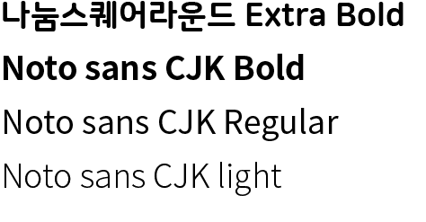
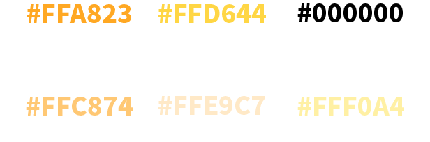
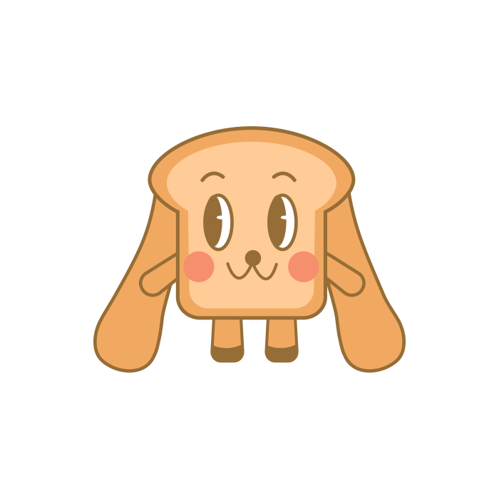
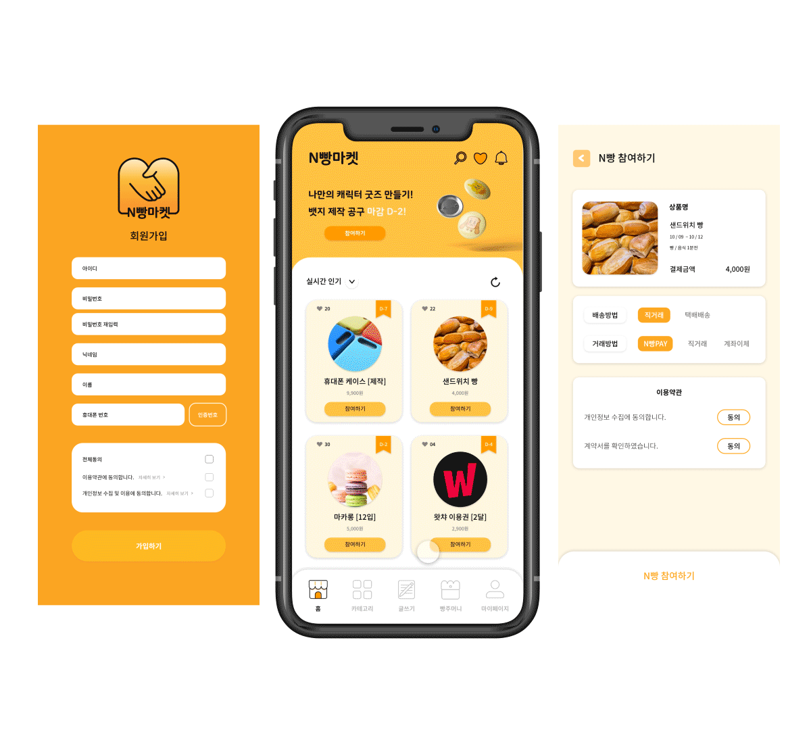
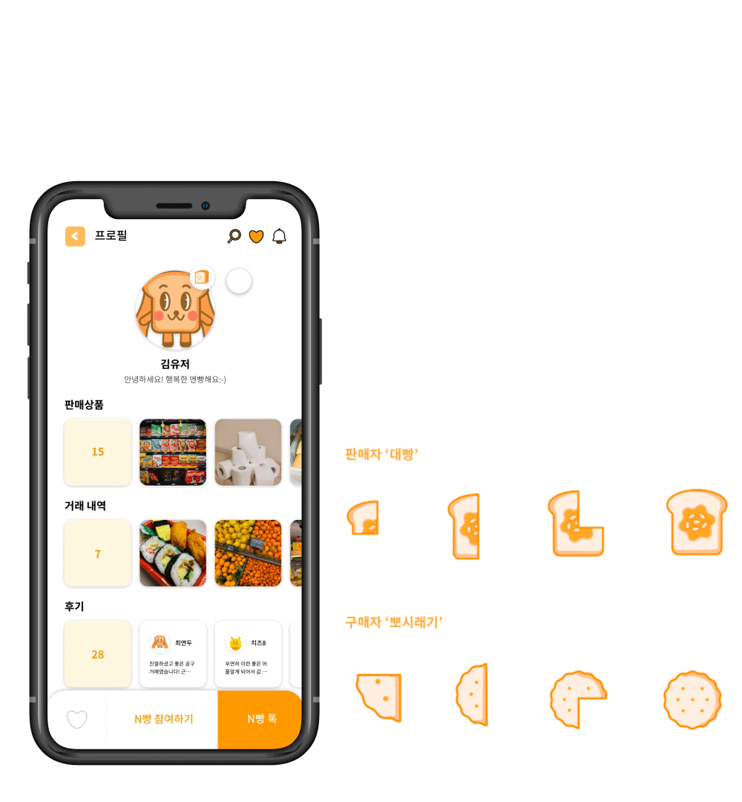
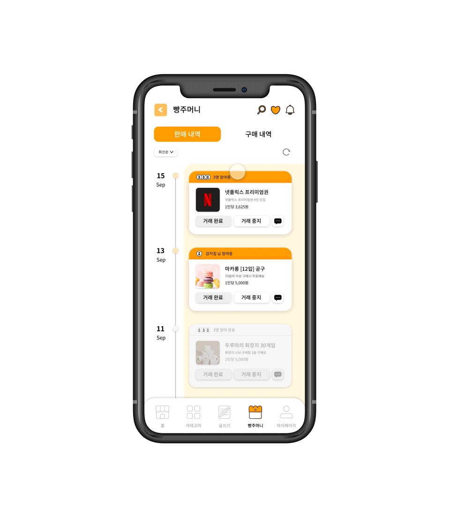
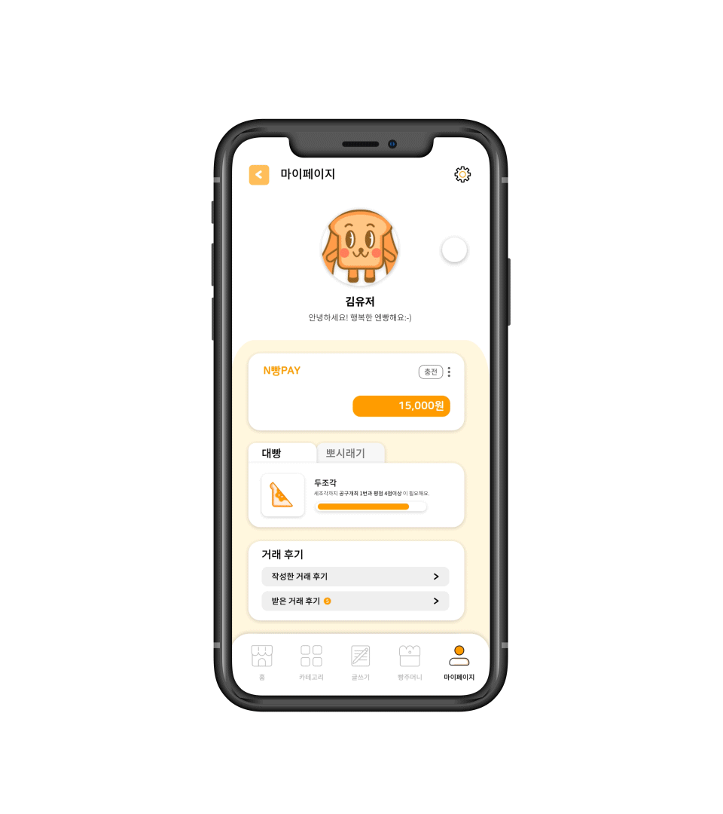

| Background | 최근 우리나라의 1인 가구 비중이 증가하며 소비 트렌드에 변화가 생기고 이와 관련된 신조어도 만들어지고 있습니다. |
1인 가구 증가에 따른 소비 트렌드 변화
숫자 1과 경제 (economy) 를 합성한 혼자만의 생활을 즐기며 소비 활동을 하는 것을 뜻하는 ‘ 1코노미 ’ 와
혼자 즐기는 문화가 확산되며 ‘ 미코노미 ’ 라는 신조어가 생겨났습니다.
하지만 시장은 여전히 다인 가구 중심이며 이러한 점이 쓰레기 문제로까지 이어지고 있습니다.
따라서 저희는 1인 가구로서 느끼는 소비의 고민을 덜어주기 위한 서비스를 기획했습니다.
| Overview |
| 1/N 소비생활의 장 N빵마켓 |  |
|
좋은 상품을 저렴하게 구매하기 위해 공동구매라는 새로운 소비 패턴이 자리잡은 시대에서 다양한 상품과 서비스로 사용자의 더 나은 가성비를 위해 기획한 서비스입니다 |
공동구매란?
여러 명의 소비자들이 필요한 상품이나 서비스를 함께 구매하여 기존 가격보다 저렴하게 구입하는 소비 방식입니다.
소비자가 주체가 되고, 소비자의 똑똑한 구매를 장려하는
누구나 쉽게 이용 가능한 공동구매 플랫폼으로
n분의 1 개념으로 접근하여 같은 소비자의 입장에서 비용 부담 절감
| Project Goals | 따라서 저희는 1인가구를 중심으로 소비자의 가성비 있는 쇼핑과 소비자의 안전한 거래를 위한 공동구매 마켓을 지향합니다 |
| Design Concept | 친근함과 편안함을 중점으로 누구나 다가가기 쉬우며 브랜드의 정체성을 나타낼 수 있는 ‘빵’을 활용한 캐릭터를 함께 사용해 심플하면서도 귀여운 디자인 컨셉입니다. |
| Keyword |
| Typhography |  | Color |  |
| Logo | 전체적인 형태는 '빵'의 모습을 하고 있으며, 접촉, 정, 나누다, 협력의 의미인 '악수'를 표현했습니다. |
| Icon |
| Character |
|  | ||
|---|---|---|
| [ 애니 ] 나누는 것을 좋아하는 빵 강아지 '애니' 사람들을 좋아하고 마음씨 착한 빵 강아지. |
[ 핀 ] 폭신폭신하고 활발한 성격의 머핀 토끼 '핀' 노는 것을 좋아하는 장난꾸러기 머핀 토끼. |
[ 슈 ] 작고 귀여운 크림 햄스터 '슈' 키가 작은게 콤플렉스라 머리 위의 크림은 슈의 자존심. |
| Service |
|  | 01 본인인증과 서약서 제도를 도입하여 판매자와 구매자 간의 신뢰도를 높였습니다. 안전한 거래를 위해 신원이 확인된 사람만이 서비스 이용이 가능하며 상품 판매 및 구매 시 체크박스 형식의 서약서에 동의하게 됩니다. |
|  | 02 총 4단계의 등급으로 누구나 판매자 대빵 구매자 뽀시래기가 될 수 있습니다 |
 |
03 투명한 과정을 위해 알림 시스템을 도입하였습니다. 판매자가 물건을 구매, 포장 및 배송을 시작하면 매 순간 과정이 구매자에게 알림이 가도록 합니다 |
|  | 04 빵주머니에서 판매, 구매내역및 N빵톡까지 한번에 확인 가능합니다 |
|  | 05 N빵PAY를 사용하여 간편하게 거래할 수 있습니다 N빵PAY를 통해 조금 더 간편하고 쉬운 거래를 할 수 있으며 잔금시스템으로 안전까지 생각했습니다. |